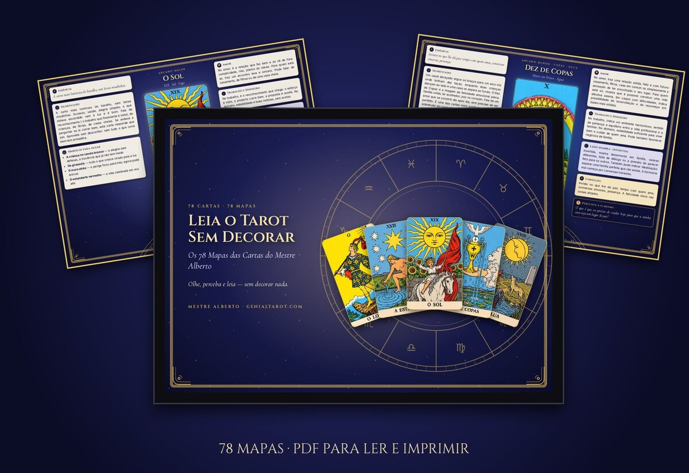
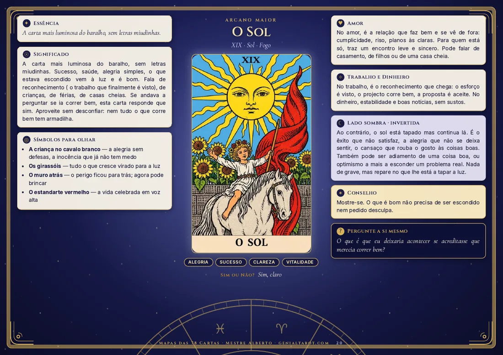
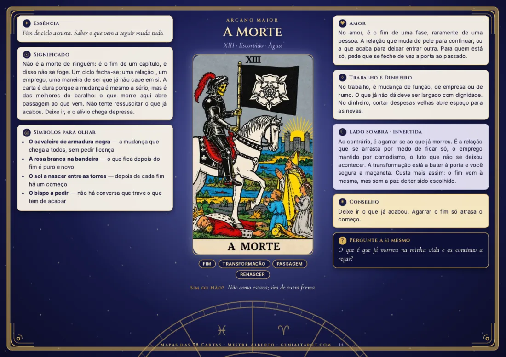
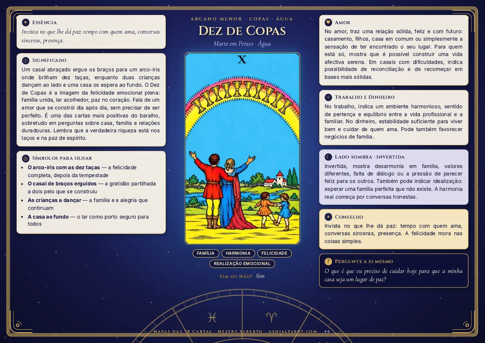
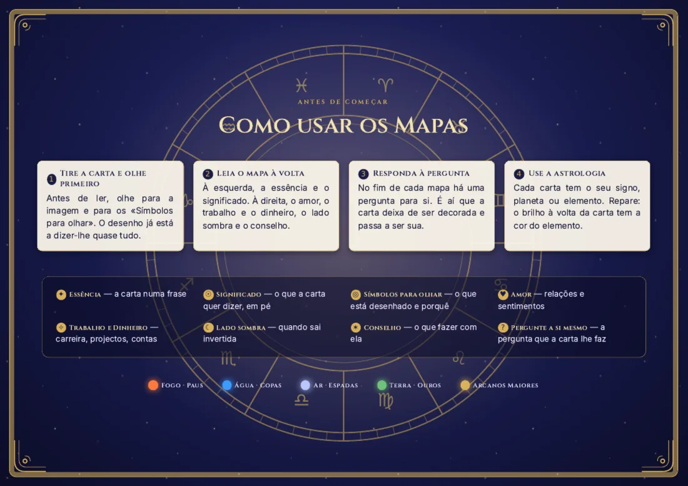

Os 78 Mapas das Cartas do Mestre Alberto

78 cartas, 78 mapas. Olhe, perceba e leia, sem decorar nada.
🗺️ Quero os meus 78 Mapas



80 páginas A4 deitadas · para ler no telemóvel, no tablet ou imprimir · imagens do Baralho Mestre Alberto
14,90 €pagamento único · cartão (Visa, Mastercard), Apple Pay ou Google Pay
Depois do pagamento, o PDF chega ao seu email em cerca de 15 minutos (veja também o «Spam» ou as «Promoções»). Prefere MB WAY ou PIX? Fale connosco pelo WhatsApp.
É um PDF com uma página para cada uma das 78 cartas do tarot, feito pelo Mestre Alberto com o seu próprio baralho. Em cada página tem a carta ao centro e, à volta, a essência, o significado, os símbolos para olhar, o amor, o trabalho e o dinheiro, o lado sombra (invertida), o conselho, a resposta sim ou não e uma pergunta para refletir.
Não. Os Mapas foram feitos para quem está a começar e não quer decorar 78 significados. Olha para a carta, lê o mapa à volta e percebe a mensagem. Quem já lê tarot usa-os como consulta rápida.
Escreve o seu nome e o email e paga 14,90 € com cartão, Apple Pay ou Google Pay. Assim que o pagamento entra, o PDF segue para o email que indicou, em regra em cerca de 15 minutos. Veja também o «Spam» ou as «Promoções».
Pode. São 80 páginas A4 deitadas (capa, «Como usar» e as 78 cartas), para ler no telemóvel, no tablet ou no computador, ou para imprimir e guardar junto do baralho.
Serve. As imagens são do Baralho Mestre Alberto, mas os significados são os tradicionais e funcionam com os baralhos mais usados, como o Rider-Waite.
Pode. Fale connosco pelo WhatsApp e indique o seu email: recebe os dados para pagar por MB WAY ou por PIX, e o PDF é enviado da mesma forma.